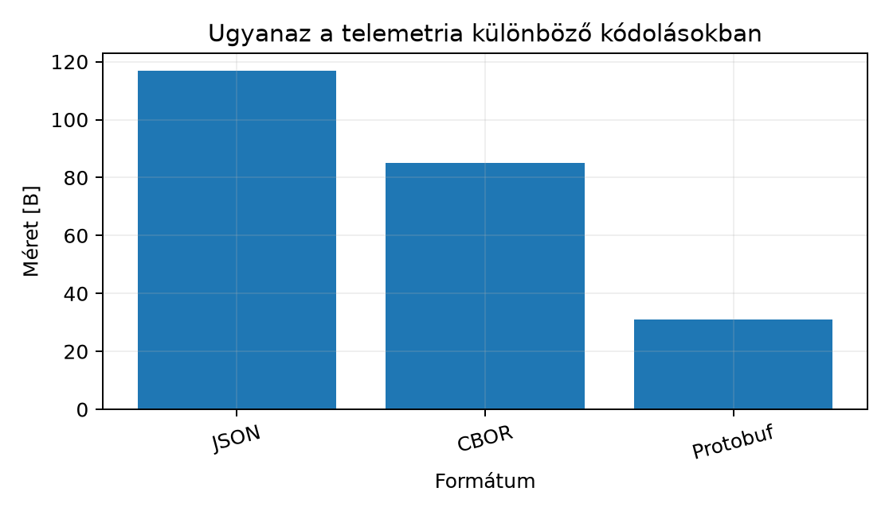

A TerraSense csomópontja a mérést bináris struktúrában,
ts_sample-ként állítja elő, a gateway pedig MQTT-n
továbbítja a backendnek. A topic-konvenció már rögzíti, hogy a
telemetria a terrasense/<site>/<node>/telemetry
topicra kerül, de az üzenet törzsének formátumáról még nem döntöttünk. A
választás hosszú távon meghatározza a sávszélességet, a feldolgozási
költséget, az eszközoldali memóriaigényt és a séma evolúcióját. Egy
LoRaWAN-os csomópontnál minden bájt fizetős, míg a backend
fejlesztésekor a JSON gyors hibakeresést tesz lehetővé. Ebben az
alfejezetben összevetjük a négy legfontosabb formátumot, és
véglegesítjük a TerraSense telemetria-sémáját.
Definíció. A JSON (JavaScript Object Notation) szöveges adatcsere-formátum, amely objektumokat kulcs–érték párokkal, tömböket és skalárokat (szám, string, logikai, null) ábrázol. Az RFC 8259 rögzíti, hogy a számok a JavaScripthez hasonlóan IEEE 754 double pontosságú lebegőpontos értékként kezelendők, hacsak a fogyasztó másképp nem állapodik meg.
A JSON előnye, hogy minden platformon azonnal olvasható és könnyen
logolható. A hátránya a méret és a számábrázolás: nincs külön egész és
lebegőpontos típus, a 0,1 nem pontosan reprezentálható, és a 2⁵³-nél
nagyobb egészek elveszíthetik a pontosságot. Az epoch ms időbélyegünk
nagyságrendű, tehát még belefér a double egész pontosságú tartományába,
de a mérési értékeknél a 22.5 mögött a fogyasztó
22.499999-et is láthat.
Definíció. A CBOR (Concise Binary Object Representation) az RFC 8949-ben definiált bináris formátum, amely a JSON adatmodellt bővíti ki: bájtstring, nem szöveges map-kulcsok, címkék (tag) és lebegőpontos félpontosság is elérhető.
A CBOR ugyanazt a szemantikát kódolja, de kompakt bájtokba. Például
egy rövid szöveget egy hossz- és típusbájttal, egy uint64-et pedig
legfeljebb 9 bájttal ábrázol. A Zephyrben a zcbor könyvtár
elérhető CBOR kódoláshoz és dekódoláshoz, de a konkrét Kconfig-nevét és
API-ját a telepített Zephyr-változatban ellenőrizni kell.
Definíció. A Protocol Buffers (protobuf) a Google
által fejlesztett, sémaalapú bináris formátum. A .proto
fájlban mezőszámokkal és típusokkal írjuk le az üzenetet, a
protoc generátor pedig célnyelvi osztályokat és sorosító
kódot készít.
A protobuf wire-formátuma a mezőket nem névvel, hanem mezőszámmal
azonosítja. A mezőazonosító egy bájtba sűríti a mezőszámot és a wire
típust: tag = (field_number << 3) | wire_type. A
varint egész kódolás a kis számokat 1 bájtba kódolja, a lebegőpontos
float 4 bájt, a string és a beágyazott üzenet
hosszprefixes. Mikrokontrollerekre a nanopb implementáció
használható, amely Zephyrben modulként érhető el; a pontos verzió és az
integráció ellenőrzést igényel.
Definíció. A SenML (Sensor Measurement Lists) az RFC
8428-ban definiált formátum, amely mérési rekordok listáját írja le.
Minden rekordnak van neve (n), egysége (u),
értéke (v) és időbélyege (t), valamint
opcionális bázismezei (bn, bt,
bu).
A SenML előnye, hogy az egységek egy szabványos regisztrációból
származnak, például Cel, %RH, %.
Ezért a TerraSense akkor is értelmezhető marad, ha a mérést nem a saját
backendünk, hanem egy másik fél fogadja. A SenML kódolható JSON-ban,
CBOR-ban vagy EXI-ben is.
A négy formátum közötti választást a következő táblázat foglalja össze.
| Szempont | JSON | CBOR | Protobuf | SenML |
|---|---|---|---|---|
| Méret | nagy | közepes | kicsi | közepes |
| Olvashatóság | igen | nem | nem | igen |
| Séma | nincs, de JSON Schema | nincs, de CDDL | van, .proto |
van, RFC 8428 |
| Feldolgozási költség | közepes | alacsony | nagyon alacsony | közepes |
| Eszközök | mindenhol | Zephyr zcbor |
nanopb |
kevés |
| Interoperabilitás | jó | jó | csak protobuf-fal | kiváló |
A TerraSense döntése: a telemetria elsődlegesen JSON
lesz a gateway és a backend közötti MQTT-üzenetekben, mert ezen a
szakaszon a sávszélesség nem szűkös, a Java/Spring Boot és a C++ gateway
is jól kezeli, és a hibakeresés során olvasható marad. A
.proto sémát is definiáljuk, mert később bináris
optimalizáláshoz és a nanopb-s eszközoldalhoz szükséges. A SenML-t az
egységek és a mérési rekordok interoperábilis leírására használjuk.
Legyen a TerraSense mérés: node_id="n001",
seq=1, ts=1735689600000 (UTC, epoch ms), és
egy hőmérséklet-mérés 22,5 °C. Ugyanaz az üzenet
JSON-ban:
{"node_id":"n001","seq":1,"ts":1735689600000,"measurements":{"temperature":{"value":22.5,"unit":"Cel","valid":true}}}A JSON kódolás hossza 117 bájt. A CBOR ugyanezt 85 bájtba kódolja, a protobuf pedig 31 bájtba. A CBOR bájtok hex dumpjának eleje:
a4 67 6e 6f 64 65 5f 69 64 64 6e 30 30 31 63 73 65 71 01 62 74 73 ...A protobuf sémája a következő:
syntax = "proto3";
package terrasense;
message Telemetry {
string node_id = 1;
uint64 seq = 2;
int64 ts = 3;
Measurements measurements = 4;
}
message Measurements {
Measurement temperature = 1;
}
message Measurement {
float value = 1;
string unit = 2;
bool valid = 3;
}A protobuf kódolásban a node_id mező 6 bájt (tag +
length + adat), a seq 2 bájt, a ts 7 bájt, a
beágyazott measurements pedig 16 bájt, összesen 31
bájt.

A méretkülönbség jól mutatja, hogy a bináris formátumok ott előnyösek, ahol a bájtok száma energia- vagy költségkorlátot jelent.
Munkakönyvtár:
mkdir -p ~/iot-labor/i032 && cd ~/iot-labor/i032Hozd létre a telemetry_codec.py fájlt az alábbi
tartalommal. A script ugyanazt a mérést kódolja JSON-ban, CBOR-ban és
protobufban, és kiírja a méreteket.
#!/usr/bin/env python3
import json
import struct
def encode_varint(value):
out = bytearray()
while value > 0x7F:
out.append((value & 0x7F) | 0x80)
value >>= 7
out.append(value)
return bytes(out)
def cbor_encode_telemetry(node_id, seq, ts, value, unit, valid):
out = bytearray()
# map 4: node_id, seq, ts, measurements
out.append(0xA4)
# text(7) "node_id"
out.append(0x67); out.extend(b"node_id")
# text(4) "n001"
out.append(0x64); out.extend(node_id.encode("ascii"))
# text(3) "seq"
out.append(0x63); out.extend(b"seq")
out.append(seq) # seq = 1, CBOR uint8
# text(2) "ts"
out.append(0x62); out.extend(b"ts")
# uint64, major 0, additional info 27
out.append(0x1B); out.extend(ts.to_bytes(8, "big"))
# text(12) "measurements"
out.append(0x6C); out.extend(b"measurements")
# map 1: temperature
out.append(0xA1)
# text(11) "temperature"
out.append(0x6B); out.extend(b"temperature")
# map 3: value, unit, valid
out.append(0xA3)
# text(5) "value"
out.append(0x65); out.extend(b"value")
# float32
out.append(0xFA); out.extend(struct.pack(">f", value))
# text(4) "unit"
out.append(0x64); out.extend(b"unit")
# text(3) "Cel"
out.append(0x63); out.extend(unit.encode("ascii"))
# text(5) "valid"
out.append(0x65); out.extend(b"valid")
out.append(0xF5 if valid else 0xF4)
return bytes(out)
def proto_encode_telemetry(node_id, seq, ts, value, unit, valid):
# inner Temperature
t = bytearray()
# value: field 1, wire type 5 (32-bit), tag = (1<<3)|5 = 0x0D
t.append(0x0D); t.extend(struct.pack("<f", value))
# unit: field 2, wire type 2 (length-delimited), tag = (2<<3)|2 = 0x12
u = unit.encode("ascii")
t.append(0x12); t.append(len(u)); t.extend(u)
# valid: field 3, wire type 0 (varint), tag = (3<<3)|0 = 0x18
t.append(0x18); t.append(1 if valid else 0)
# Measurement message: field 1, wire type 2, tag = 0x0A
m = bytearray()
m.append(0x0A); m.append(len(t)); m.extend(t)
# Telemetry message
out = bytearray()
# node_id: field 1, wire type 2
n = node_id.encode("ascii")
out.append(0x0A); out.append(len(n)); out.extend(n)
# seq: field 2, wire type 0, tag = (2<<3)|0 = 0x10
out.append(0x10); out.extend(encode_varint(seq))
# ts: field 3, wire type 0, tag = (3<<3)|0 = 0x18
out.append(0x18); out.extend(encode_varint(ts))
# measurements: field 4, wire type 2, tag = (4<<3)|2 = 0x22
out.append(0x22); out.append(len(m)); out.extend(m)
return bytes(out)
def main():
msg = {
"node_id": "n001",
"seq": 1,
"ts": 1735689600000,
"measurements": {
"temperature": {"value": 22.5, "unit": "Cel", "valid": True}
}
}
json_bytes = json.dumps(msg, separators=(",", ":")).encode("utf-8")
cbor_bytes = cbor_encode_telemetry("n001", 1, 1735689600000, 22.5, "Cel", True)
proto_bytes = proto_encode_telemetry("n001", 1, 1735689600000, 22.5, "Cel", True)
print(f"JSON {len(json_bytes):3d} B")
print(f"CBOR {len(cbor_bytes):3d} B")
print(f"Protobuf {len(proto_bytes):3d} B")
print(f"CBOR hex: {cbor_bytes.hex()}")
print(f"Protobuf hex: {proto_bytes.hex()}")
if __name__ == "__main__":
main()Futtasd a scriptet:
python3 telemetry_codec.pyVárt kimenet:
JSON 117 B
CBOR 85 B
Protobuf 31 B
CBOR hex: a4676e6f64655f6964646e30303163736571016274731b00000194...
Protobuf hex: 0a046e3030311001188094b0a8f6a42a1a0e0a0c0d0000b441120343656c1801Hozd létre a végleges telemetria-sémát is. A
telemetry-schema.json fájl tartalma:
{
"schema_version": 1,
"node_id": "n001",
"seq": 1,
"ts": 1735689600000,
"measurements": {
"temperature": {"value": 22.5, "unit": "Cel", "valid": true, "reason": null},
"humidity": {"value": 61.2, "unit": "%RH", "valid": true, "reason": null},
"soil_moisture": {"value": 35.0, "unit": "%", "valid": false, "reason": "suspect"}
}
}A telemetry.proto fájl pedig:
syntax = "proto3";
package terrasense;
message Telemetry {
uint32 schema_version = 1;
string node_id = 2;
uint64 seq = 3;
int64 ts = 4;
Measurements measurements = 5;
}
message Measurements {
Measurement temperature = 1;
Measurement humidity = 2;
Measurement soil_moisture = 3;
}
message Measurement {
float value = 1;
string unit = 2;
bool valid = 3;
string reason = 4;
}Továbbvitt eredmény. A
~/iot-labor/i032/telemetry-schema.json fájlban rögzített
JSON-séma a TerraSense hivatalos telemetria-formátuma:
schema_version, node_id, seq,
ts és measurements mezőkkel,
SenML-egységrövidítésekkel (Cel, %RH,
%) és valid/reason érvényességi
jelöléssel. A ~/iot-labor/i032/telemetry.proto a bináris
változat. Ezt a sémát használja a Sémák és
verziózás: kompatibilis változtatások, a A ts-gw
szolgáltatás C++-ban: protokollfordítás MQTT-re, a Ingest: MQTT-ből a backendbe, idempotensen és az Idősoros adatbázisok és adatmodellezés
alfejezet.
A labor kimenetét a hex dump alapján ellenőrizhetjük. A CBOR első
bájtja a4, ami egy 4 elemből álló map-et jelent; a protobuf
első bájtja 0a, ami az 1-es mező string típusú tagje. A
méreteket a len() függvény pontosan adja meg.
| Tünet | Ok | Javítás |
|---|---|---|
A JSON-ben a 22.5 után 22.499999 jelenik
meg |
A fogyasztó double ábrázolása |
Kerekíts a megjelenítésnél, vagy küldj fixpontos egész értéket |
| A protobuf kódolt bájt hossza nagyobb a vártnál | A mezőszám nagyobb, mint 15, vagy a string hossza nagyobb, mint 127 | Használj kis mezőszámokat a gyakori mezőkhöz, és ellenőrizd a varint hosszakat |
A CBOR dekódoló major type 7 hibát ad |
A ts uint64 kódolásnál rossz a kiegészítő bájt |
Ellenőrizd a 0x1B utáni 8 bájt big-endian
sorrendjét |
A SenML-ben a v mező ütközik a verzióval |
A SenML a v-t a mért értéknek tartja fenn |
A TerraSense JSON-ban schema_version mezőt használj, ne
v-t |
0,1 nem pontos. A fizikai
méréseket érdemes fixpontos egészre skálázva küldeni, például a
hőmérsékletet 0,01 °C egységben.v mező félreértése. A SenML-ben
a v az érték, nem a verzió; a saját sémánkban a verziót
schema_version-nek nevezzük.seq értéke 300, a ts pedig 1735689600000. Hány
bájtot foglal a két mező varint kódolása külön-külön?telemetry_codec.py-t páratartalom-méréssel
(humidity, 61.2, %RH,
valid=true), és igazítsd hozzá a
telemetry.proto-t. Ez a módosítás előkészíti a Sémák és verziózás: kompatibilis változtatások
alfejezetet.telemetry-schema.json-ból hiányzik a valid
mező. Tervezz olyan sémaverziós megoldást, amely a régi eszközöket is
kezeli.seq=300 varint kódolása 2 bájt, mert 300 > 127, de
300 < 16384. A ts=1735689600000 varint kódolása 6 bájt,
mert 2⁴²-nél kisebb, de 2³⁵-nél nagyobb.message Measurements {
Measurement temperature = 1;
Measurement humidity = 2;
}A scriptben a CBOR kódolóhoz a measurements map-be be
kell illeszteni a humidity bejegyzést. A protobuf kódolóban
a humidity mező mezőszáma 2, 0x12 taggel
kezdődik. A JSON kódolásnál a measurements objektum
bővül:
"humidity": {"value": 61.2, "unit": "%RH", "valid": True}schema_version 1-es verzióban
a valid mező kötelező, a backend pedig elutasítja a hiányzó
mezőt. A 2-es verzióban a valid opcionális lehet, és a
backend a hiányzó mezőt false-ként kezeli, vagy a
reason mező alapján dönt. A backend a
schema_version alapján választja ki a validálót, így a régi
eszközök tovább működnek, az új eszközök pedig gazdagabb állapotleírást
küldhetnek. Ez a stratégia alapozza meg a Sémák és
verziózás: kompatibilis változtatások alfejezetet.A JSON olvasható, de nagy; a CBOR ugyanazt a szemantikát kompakt
bájtokban tárolja; a protobuf sémaalapú, kódgenerálást és minimális
wire-méretet ad; a SenML pedig szabványos mérési rekord és egységmodell.
A TerraSense telemetria elsődlegesen JSON, mert a gateway–backend
szakaszon a sávszélesség nem korlát, és a hibakeresés fontos. A végleges
séma a ~/iot-labor/i032/telemetry-schema.json fájlban
található: schema_version, node_id,
seq, ts és measurements mezőkkel,
SenML-egységekkel, valid jelzővel. A
~/iot-labor/i032/telemetry.proto a bináris alternativa. A
telemetry_codec.py labor megmutatja, hogy a példaüzenet
JSON-ben 117 B, CBOR-ban 85 B, protobufban 31 B. Továbbvitt
eredmény: ezt a sémát használja az Sémák és
verziózás: kompatibilis változtatások, a A ts-gw
szolgáltatás C++-ban: protokollfordítás MQTT-re, a Ingest: MQTT-ből a backendbe, idempotensen és az Idősoros adatbázisok és adatmodellezés
alfejezet.
https://protobuf.dev/ —
a protoc pontos parancsa és a nanopb verziófüggő API-ja
ellenőrizendő.zcbor és nanopb moduljainak
Kconfig-neveit és a telepített verziókat a felhasználónak a saját
Zephyr-telepítésében kell ellenőriznie.telemetry_codec.py által kódolt
példaüzenetből származnak, illusztratívak, és a választott mezőnevektől,
kódolótól és opcióktól függenek.